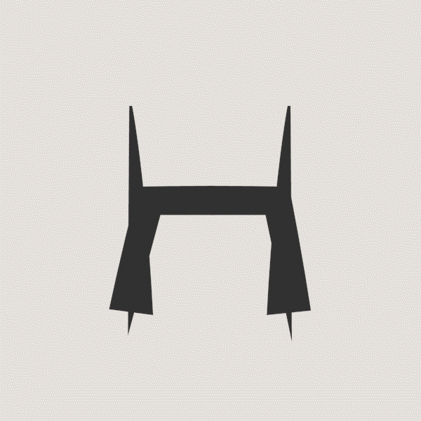
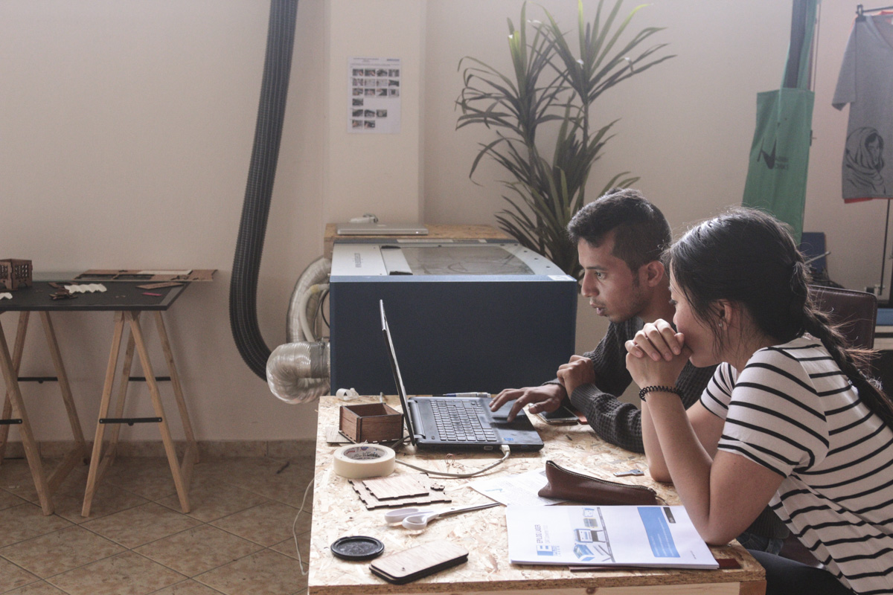
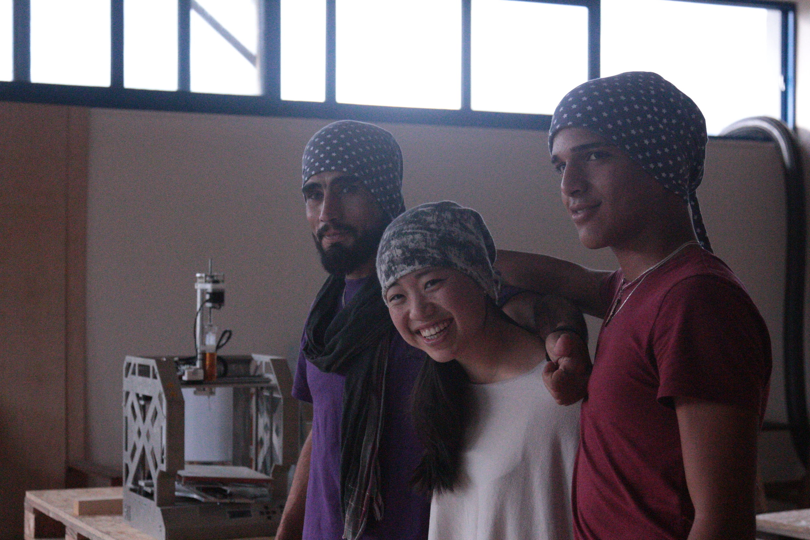
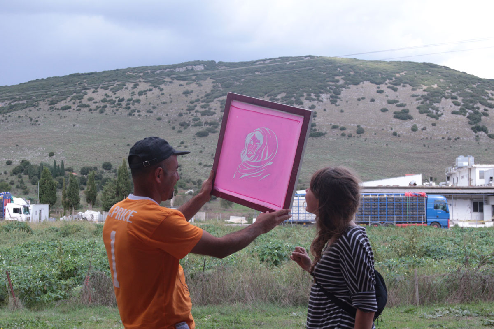
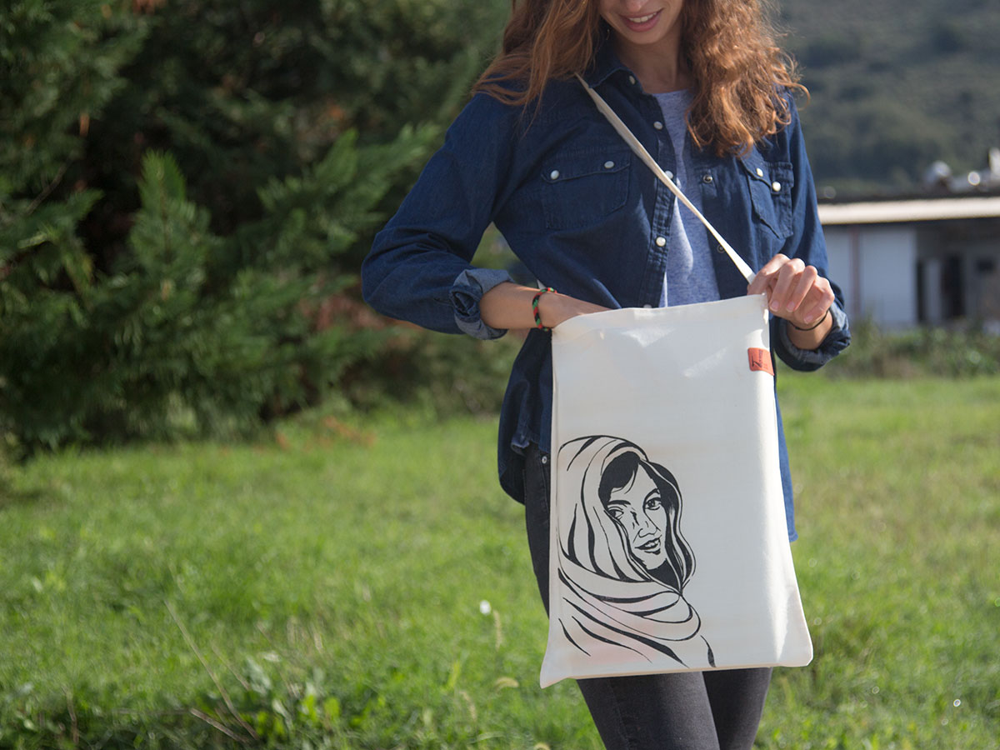
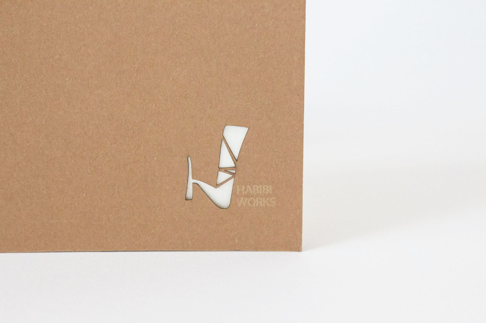

My Role
Supporting the Media Lab
Delivering lasercutting workshops
Logo development
Year
Summer 2016
Experimenting with shapes

During my three weeks on site, I was part of the workshop team at the Media Lab and was in
charge of
regular laser cutting workshops. Furthermore I promoted this project at fairs,
designed marketing material such as posters and flyers. One special and fun task
for me was to create a logo and experiment with shapes and as well as the underlying
connotation.
It was a matter close to my heart to push this project forward. This
was just another reason to extend my studies for these purposes.
Today Habibi Works still exists in Katsikas and enriches life of
of many refugees and volunteers on site.
Here is the official website.




